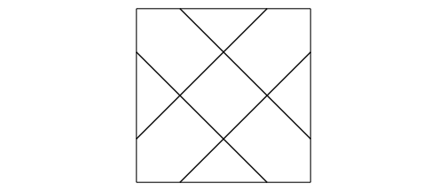
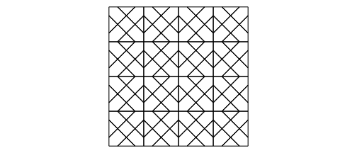
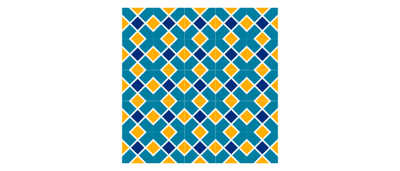

Kaashi (Tile)


The art of tiling has long been used to decorate homes and holy places in Iran. One of the masterpieces of this art can be found in Isfahan’s Sheikh Lotfollah Mosque.

The purpose of this package is to create Islamic pattern using R functions. To generate Islamic patterns, we employ the Hankin method, as described in Craig S. Kaplan’s paper Islamic Star Patterns from Polygons in Contact. This paper investigates geometric vocabulary for designing star shape patterns.
In the first step of Hankin’s method, a pair of rays is associated with every contact position on every tile. A single contact position gets its two rays, Each of which forms the contact angle \(\theta\) with the edge and separate the ray origins by distance \(\delta\).
library(Kaashi)
library(ggplot2)
tile <- motif(theta = 45, delta = 0.5, polyLine = T, drawBox = T)
tilePlotter(tile)
By repeating the patterns designs, larger designs can be produced on the page.

vector = rbind(
c(2,0),
c(0,2))
tiles <- tiling(tile,n = 4, type = "periodic",vector = vector)
tilePlotter(tiles)
motif function implements Hankin’s method. The output of the function is sf class that can be polylines or polygons. In polygons case, sf data.frame have two fields area and name.
You can set fill parameter area or name for coloring shape.
tile <- motif(theta = 45, delta = 0.5, polyLine = F)
head(tile)
#> Simple feature collection with 6 features and 2 fields
#> Geometry type: POLYGON
#> Dimension: XY
#> Bounding box: xmin: -1 ymin: 0 xmax: 0.4985858 ymax: 2
#> CRS: NA
#> name area geometry
#> 1 R01 0.249 POLYGON ((0.4985858 0, -0.4...
#> 2 R02 0.623 POLYGON ((-0.5014142 0, -1 ...
#> 3 R03 0.249 POLYGON ((-1 0.5014142, -1 ...
#> 4 R04 0.623 POLYGON ((-1 1.501414, -1 2...
#> 5 R05 0.497 POLYGON ((-2.168404e-19 1.4...
#> 6 R06 0.249 POLYGON ((-0.4985858 2, 0.4...To plot patterns use tilePlotter function.
tile <- motif(theta = 45, delta = 0.5, dist = 0.05, polyLine = F)
tiles <- tiling(tile, n = 5)
tilePlotter(tiles,tileColor = c("#FFAD00","#002D7B","#007EA1"),borderSize = 0.01)
Below, examples of triangle, square, and hexagonal tiling can be found.

|

|

|
Installation
You can install the development version of Kaashi from GitHub with:
# install.packages("devtools")
devtools::install_github("ehyaei/Kaashi")